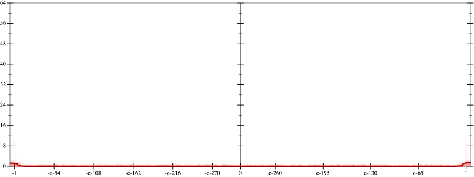
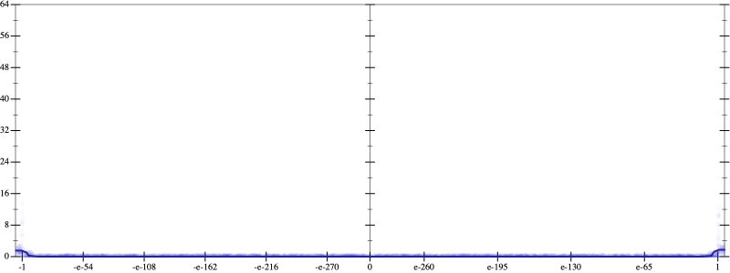
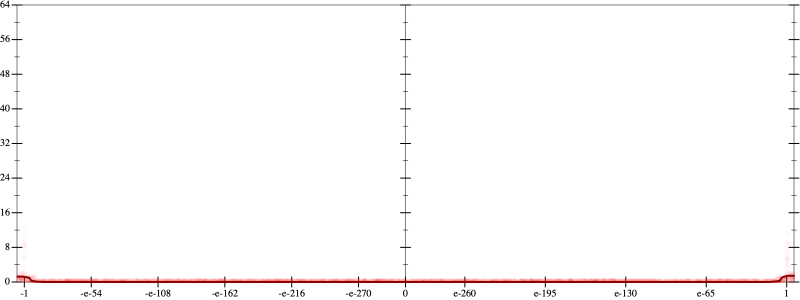
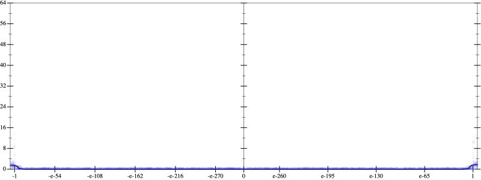

Initial program 0.0
\[\left(\left(\left(\left(\left(\left(\left(17643225600.0 \cdot x + -94097203200.0 \cdot \left(\left(x \cdot x\right) \cdot x\right)\right) + 131736084480.0 \cdot \left(\left(\left(\left(x \cdot x\right) \cdot x\right) \cdot x\right) \cdot x\right)\right) + -75277762560.0 \cdot \left(\left(\left(\left(\left(\left(x \cdot x\right) \cdot x\right) \cdot x\right) \cdot x\right) \cdot x\right) \cdot x\right)\right) + 20910489600.0 \cdot \left(\left(\left(\left(\left(\left(\left(\left(x \cdot x\right) \cdot x\right) \cdot x\right) \cdot x\right) \cdot x\right) \cdot x\right) \cdot x\right) \cdot x\right)\right) + -3041525760.0 \cdot \left(\left(\left(\left(\left(\left(\left(\left(\left(\left(x \cdot x\right) \cdot x\right) \cdot x\right) \cdot x\right) \cdot x\right) \cdot x\right) \cdot x\right) \cdot x\right) \cdot x\right) \cdot x\right)\right) + 233963520.0 \cdot \left(\left(\left(\left(\left(\left(\left(\left(\left(\left(\left(\left(x \cdot x\right) \cdot x\right) \cdot x\right) \cdot x\right) \cdot x\right) \cdot x\right) \cdot x\right) \cdot x\right) \cdot x\right) \cdot x\right) \cdot x\right) \cdot x\right)\right) + -8912896.0 \cdot \left(\left(\left(\left(\left(\left(\left(\left(\left(\left(\left(\left(\left(\left(x \cdot x\right) \cdot x\right) \cdot x\right) \cdot x\right) \cdot x\right) \cdot x\right) \cdot x\right) \cdot x\right) \cdot x\right) \cdot x\right) \cdot x\right) \cdot x\right) \cdot x\right) \cdot x\right)\right) + 131072.0 \cdot \left(\left(\left(\left(\left(\left(\left(\left(\left(\left(\left(\left(\left(\left(\left(\left(x \cdot x\right) \cdot x\right) \cdot x\right) \cdot x\right) \cdot x\right) \cdot x\right) \cdot x\right) \cdot x\right) \cdot x\right) \cdot x\right) \cdot x\right) \cdot x\right) \cdot x\right) \cdot x\right) \cdot x\right) \cdot x\right)\]
Taylor expanded around inf 0.0
\[\leadsto \left(\left(\left(\left(\left(\left(\left(17643225600.0 \cdot x + -94097203200.0 \cdot \left(\left(x \cdot x\right) \cdot x\right)\right) + 131736084480.0 \cdot \left(\left(\left(\left(x \cdot x\right) \cdot x\right) \cdot x\right) \cdot x\right)\right) + -75277762560.0 \cdot \left(\left(\left(\left(\left(\left(x \cdot x\right) \cdot x\right) \cdot x\right) \cdot x\right) \cdot x\right) \cdot x\right)\right) + 20910489600.0 \cdot \left(\left(\left(\left(\left(\left(\left(\left(x \cdot x\right) \cdot x\right) \cdot x\right) \cdot x\right) \cdot x\right) \cdot x\right) \cdot x\right) \cdot x\right)\right) + -3041525760.0 \cdot \left(\left(\left(\left(\left(\left(\left(\left(\left(\left(x \cdot x\right) \cdot x\right) \cdot x\right) \cdot x\right) \cdot x\right) \cdot x\right) \cdot x\right) \cdot x\right) \cdot x\right) \cdot x\right)\right) + \color{blue}{233963520.0 \cdot {x}^{13}}\right) + -8912896.0 \cdot \left(\left(\left(\left(\left(\left(\left(\left(\left(\left(\left(\left(\left(\left(x \cdot x\right) \cdot x\right) \cdot x\right) \cdot x\right) \cdot x\right) \cdot x\right) \cdot x\right) \cdot x\right) \cdot x\right) \cdot x\right) \cdot x\right) \cdot x\right) \cdot x\right) \cdot x\right)\right) + 131072.0 \cdot \left(\left(\left(\left(\left(\left(\left(\left(\left(\left(\left(\left(\left(\left(\left(\left(x \cdot x\right) \cdot x\right) \cdot x\right) \cdot x\right) \cdot x\right) \cdot x\right) \cdot x\right) \cdot x\right) \cdot x\right) \cdot x\right) \cdot x\right) \cdot x\right) \cdot x\right) \cdot x\right) \cdot x\right) \cdot x\right)\]
Applied simplify0.1
\[\leadsto \color{blue}{\left(\left({x}^{13} \cdot 233963520.0 + \left({x}^{3} \cdot \left({x}^{3} \cdot {x}^{3}\right)\right) \cdot \left(20910489600.0 + x \cdot \left(x \cdot -3041525760.0\right)\right)\right) + \left(\left(\left(\left(-75277762560.0 \cdot x\right) \cdot \left(x \cdot x\right)\right) \cdot \left(\left(x \cdot x\right) \cdot \left(x \cdot x\right)\right) + 17643225600.0 \cdot x\right) + \left(x \cdot x\right) \cdot \left(-94097203200.0 \cdot x + \left(x \cdot 131736084480.0\right) \cdot \left(x \cdot x\right)\right)\right)\right) + \left({x}^{3} \cdot \left(\left(\left(\left(x \cdot x\right) \cdot \left(x \cdot x\right)\right) \cdot \left(\left(x \cdot x\right) \cdot \left(x \cdot x\right)\right)\right) \cdot \left(\left(x \cdot x\right) \cdot \left(x \cdot x\right)\right)\right)\right) \cdot \left(131072.0 \cdot \left(x \cdot x\right) + -8912896.0\right)}\]
- Using strategy
rm Applied add-cube-cbrt0.1
\[\leadsto \left(\left({x}^{13} \cdot 233963520.0 + \left({x}^{3} \cdot \left({x}^{3} \cdot {x}^{3}\right)\right) \cdot \left(20910489600.0 + x \cdot \left(x \cdot -3041525760.0\right)\right)\right) + \left(\left(\left(\left(-75277762560.0 \cdot x\right) \cdot \left(x \cdot x\right)\right) \cdot \left(\left(x \cdot x\right) \cdot \left(x \cdot x\right)\right) + 17643225600.0 \cdot x\right) + \left(x \cdot x\right) \cdot \left(-94097203200.0 \cdot x + \left(x \cdot 131736084480.0\right) \cdot \left(x \cdot x\right)\right)\right)\right) + \left({x}^{3} \cdot \left(\left(\left(\left(x \cdot x\right) \cdot \left(x \cdot x\right)\right) \cdot \left(\left(x \cdot x\right) \cdot \left(x \cdot x\right)\right)\right) \cdot \left(\left(x \cdot x\right) \cdot \left(x \cdot x\right)\right)\right)\right) \cdot \left(\color{blue}{\left(\sqrt[3]{131072.0 \cdot \left(x \cdot x\right)} \cdot \sqrt[3]{131072.0 \cdot \left(x \cdot x\right)}\right) \cdot \sqrt[3]{131072.0 \cdot \left(x \cdot x\right)}} + -8912896.0\right)\]
 
